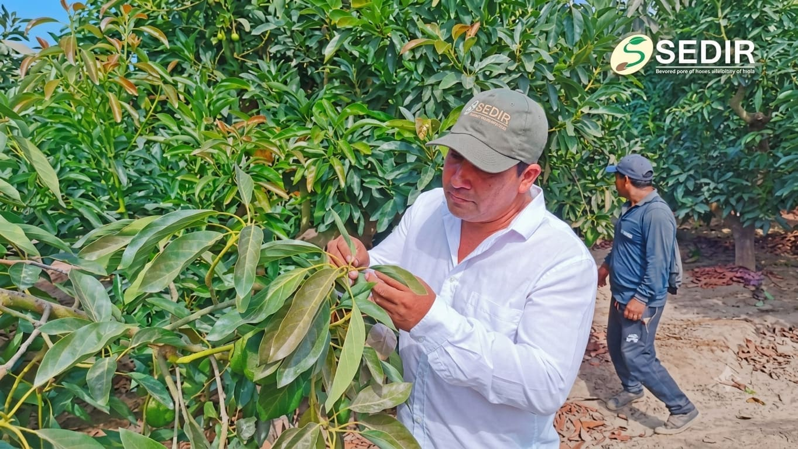
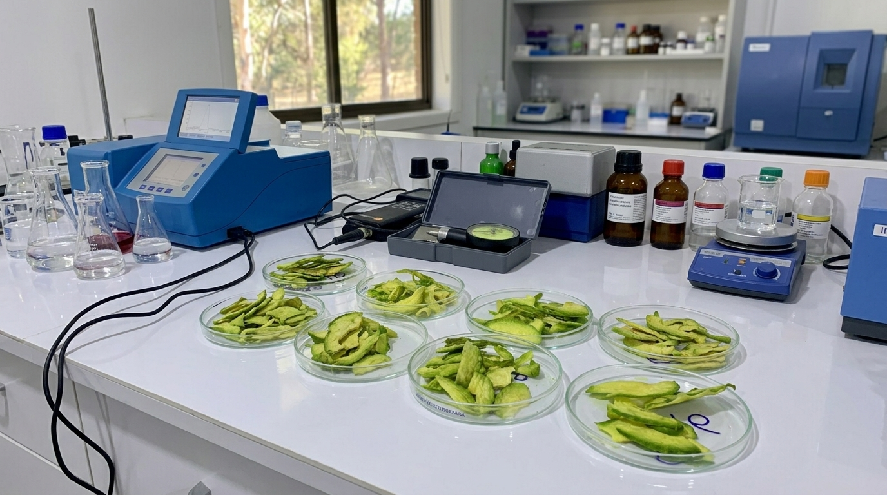

Asesoría y Gestión
.jpeg)
Asesoría Agrícola
Brindamos acompañamiento y asesoramiento técnico a los agricultores para optimizar sus prácticas de cultivo, mejorando la calidad y el rendimiento de sus productos. Evaluamos factores como el clima, el suelo y las variedades de cultivo para ofrecer recomendaciones personalizadas.

Planes de Fertilización
Diseñamos estrategias de fertilización personalizadas según las necesidades específicas de cada cultivo. Optimizamos la aplicación de nutrientes para mejorar la productividad y sostenibilidad de la explotación agrícola.

Asesoría en Apicultura
Asistimos con asesoría en la instalación y manejo de apiarios, control de enfermedades y producción de miel, fomentando una apicultura sostenible.
Investigación y Laboratorio

Fumigaciones
Realizamos aplicaciones seguras y efectivas de productos fitosanitarios para el control de plagas y enfermedades, protegiendo la salud de los cultivos. Usamos métodos y productos certificados que garantizan la inocuidad de los alimentos y el respeto al medio ambiente.

Evaluación Sanitaria
Llevamos a cabo inspecciones detalladas para diagnosticar el estado fitosanitario de los cultivos. Identificamos la presencia de plagas, enfermedades y deficiencias nutricionales, proponiendo soluciones adecuadas para mejorar la salud de las plantas.
Técnicas de Cultivo

Injertos
Aplicamos técnicas especializadas de injertación para mejorar la calidad y productividad de los cultivos. Mediante esta práctica, fortalecemos la resistencia de las plantas a enfermedades y adaptamos su desarrollo a diferentes condiciones climáticas y de suelo.

Podas
Ejecutamos podas de formación, mantenimiento y producción para favorecer el crecimiento saludable de los árboles frutales y otros cultivos. Eliminamos ramas innecesarias o afectadas, mejorando la aireación y la exposición solar para obtener mejores cosechas.
.jpeg)
Servicio de Polinización
Ofrecemos polinización con colmenas de abejas para mejorar el rendimiento de los cultivos de palta, promoviendo la conservación de la biodiversidad y la sostenibilidad agrícola.
Sanidad y Protección
Nuestro compromiso va más allá de la asistencia en campo. En SEDIR respaldamos cada proceso productivo con rigor científico. Contamos con instalaciones, equipos y parcelas experimentales donde analizamos, medimos y validamos soluciones tecnológicas diseñadas específicamente para elevar la competitividad del sector agroindustrial de la región.

Análisis de materia seca
Se realizan análisis de materia seca en palta, control de calidad de destilados de uva (Brix/m3), además gestionamos el análisis de suelos y agua en laboratorios más reconocidos de nuestro país.